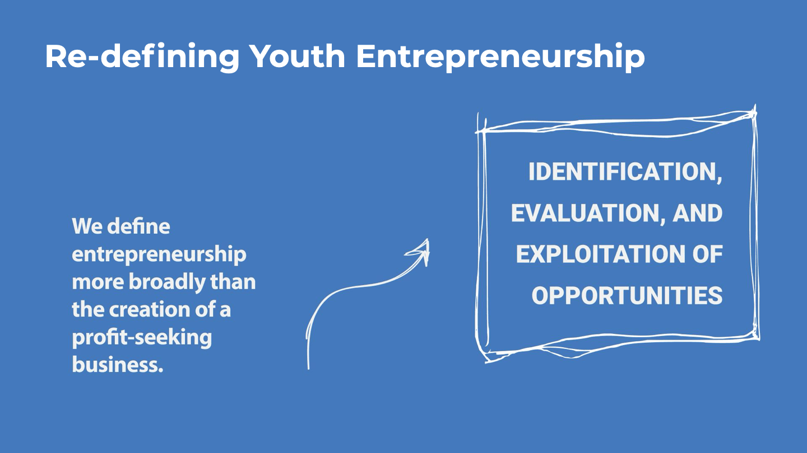
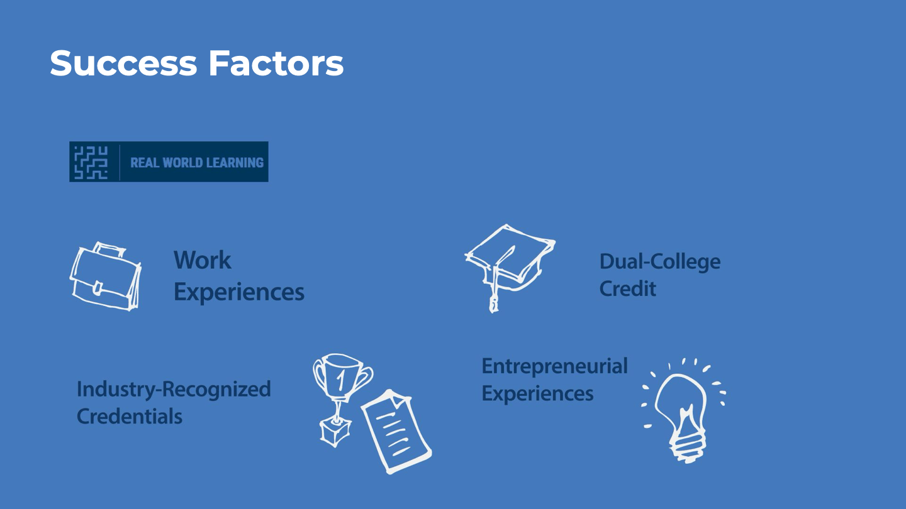

Re-engaging Youth Entrepreneurship
The Kauffman Foundation had funded youth entrepreneurship at scale, then stopped for a decade. A cross-programme committee was convened to decide whether to go back in. I ran the six months in between, and wrote what came out.

The brief
One question, asked to a room that did not agree
In January 2021 the Foundation convened a committee of associates drawn from three programme areas that rarely sit at the same table: education, entrepreneurship, and Kansas City civic. Each brought a different set of grantees, a different definition of success, and a different instinct about what re-entry should look like.
They were given one question to hold for six months.
What would it look like if every young person had access to experiences that equipped them to be entrepreneurial?
My job was the connective tissue: information gathering and facilitation. Find what already exists locally and nationally, put it in front of the committee in a form they can argue with, run the sessions where they argue, and then write the thing leadership actually decides from.
The definition problem
The word was doing damage before the work started
Held narrowly, youth entrepreneurship means teenagers starting companies. That reading makes the field tiny, because very few teenagers start companies and very few should. It also quietly excludes a large number of organisations already doing the work under other names. The Aspen Institute found roughly a quarter of youth-serving programmes are building entrepreneurial skills without using the word at all.
Held broadly, as identifying a problem worth solving and mobilising resources to solve it, the same investment reaches library maker spaces, after-school programmes, robotics teams and Girl Scouts.
Widening the definition was the first recommendation, and it is the one that changes the size of everything downstream.
The landscape work sorted every programme in the metro into three types. Exposure events are one-off, a competition or a challenge day. Episodic programming sits inside a trusted organisation that does something else most of the year. Intentional pathways run for years, usually with a school district behind them.
Sorting them that way made the gap visible immediately. The deepest programmes are the ones tied to district funding, which means the best-resourced districts have them and the least-resourced districts do not. An access problem, wearing a programme-quality costume.
The exercise
Eight three-minute pitches, one rubric
Rather than write options and ask the committee to react, I had each member pitch their own. Three minutes, deliberately loose, their own point of view, against a shared rubric so the pitches would be comparable.
- What problem or opportunity does this approach try to solve?
- How will this idea solve it?
- Why is this the best approach for the Foundation to take?
- What is a downside of the Foundation taking this approach?
- What resources would we need to take this approach?
Re-entry requires listening at multiple levels
Deep learning through intentional investing
Abstraction leads to ground-breaking solutions
Real World Learning as a foundation to build on
From a strengthened community of practice to a gap-filling portfolio
Evolve Real World Learning’s efforts in four distinct ways
The ecosystem is here, and it is ready to grow
Pregame analysis through a sponsored convener
Pitch titles as written. The committee members were Foundation associates and are not named here.
The pivot
The vote was the wrong instrument, and the summaries proved it
The plan was straightforward. Summarise the eight pitches, hand the set back to the group, and have them vote.
Writing the summaries is what killed the vote. Laid side by side, the pitches were not eight competing strategies. They were one strategy with eight different emphases. Everybody wanted to start with the schools work already in motion, everybody wanted to learn from national players, and everybody thought the effort had to reach past the school day.
A vote at that point would have manufactured a loser out of a consensus, and then spent the rest of the year defending a margin that never existed.
Rank and vote
Eight concepts, one winner, seven discarded. Produces a decision and a faction.
Direction, unique aspects, risks
Name what all eight share. Keep what only one of them saw. List what could go wrong. Then rank by importance, not by author.
The replacement exercise had three lists. Direction collected the shared spine, which is what leadership needed to hear as a single recommendation. Unique aspects preserved the ideas only one person had, so consensus did not quietly delete the sharpest thinking in the room. Risks was written by the same people who wrote the pitches, which is the only version of a risk register anybody believes.
Then the group ranked those, rather than ranking each other.
They were not choosing between eight strategies. They were describing one, eight times.
The output
A staged road map, and a first year small enough to be approved
Discover
A standing steering committee across the three programme areas. An ecosystem-wide summit with an open call. Community prototyping off the back of it. National discovery with other funders. First-year budget capped at $400,000.
Design and deliver
Use what year one surfaced to begin grant support shaped for the Kansas City metro, rather than imported whole.
Deliver and sustain
Continue delivery and design the plan that outlives the initiative.

The shape of that first year is the consensus made operational. A summit rather than a grant round, because the committee’s own risk list said the loudest danger was signalling money before understanding the field, and setting off a year of phone calls the Foundation could not answer.
The recommendation was also deliberately anchored to something already running. Real World Learning had entrepreneurial experiences established as a recognised credential in metro high schools. Starting there meant re-entry without announcing re-entry.
Start from Real World Learning’s established position rather than from a new banner.
Re-define youth entrepreneurship around mindset and education, to widen who counts.
Keep design centred on community need, learning, and racial equity, diversity and inclusion.
What I take from it
The facilitator’s job is to notice when the plan is wrong
Running the agenda is the easy half. The valuable half is being close enough to the material to see, mid-exercise, that the instrument you brought is about to produce a worse answer than the room already has.
Nobody would have complained about the vote. It was on the plan, it would have produced a ranked list, and the list would have looked like a result. It just would not have been true.
Have a group that needs to reach a real decision?
This is research, facilitation, and the written recommendation leadership can act on. Tell me what has to be decided.
Start the conversation